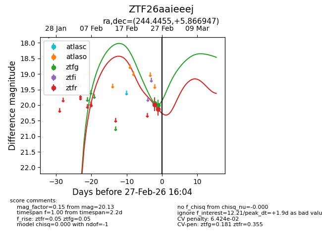
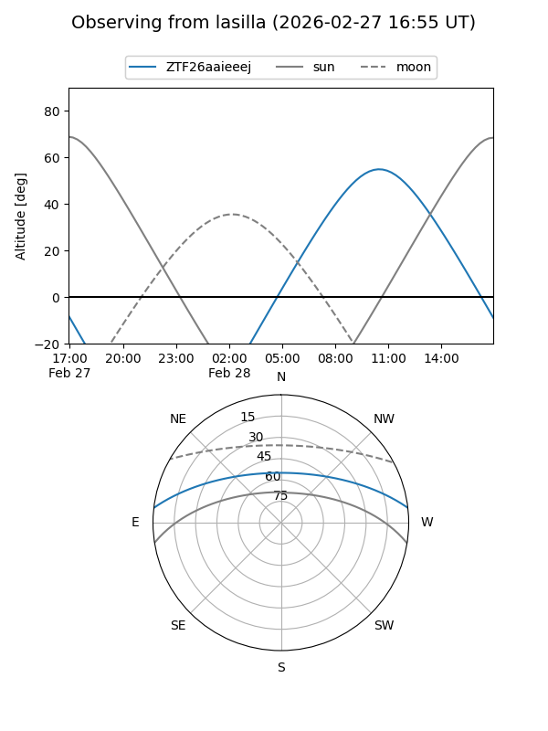
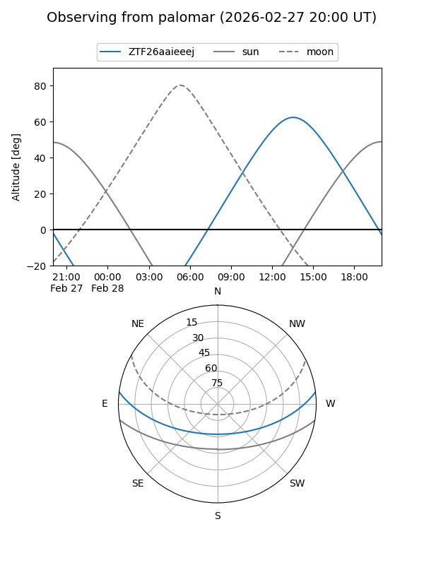
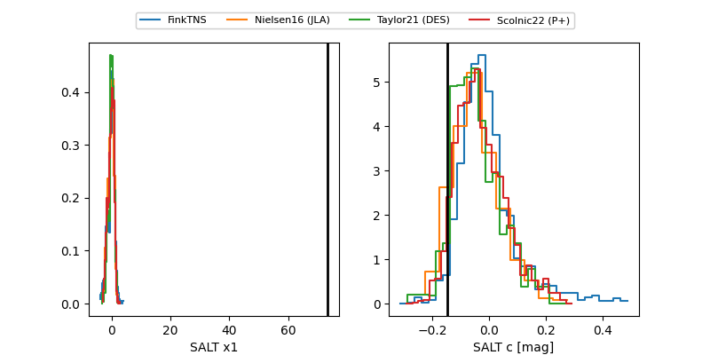

ZTF26aaieeej
Target ZTF26aaieeej at 2026-02-27 16:05
Aliases and brokers:
FINK: link
Lasair: link
ALeRCE: link
alt names
ZTF26aaieeej (ztf,fink_ztf)
Coordinates:
equatorial (ra, dec) = 244.4455,+5.86695
equatorial (HMS+DMS) = 16:17:46.92,+05:52:01.01
galactic (l, b) = (19.1725,+36.63374)
Flags:
likely cv
Photometry:
last ztfg=20.00, ztfr=20.13
2 ztfg, 2 ztfr detections
Lightcurve

Visibility


Additional plots
